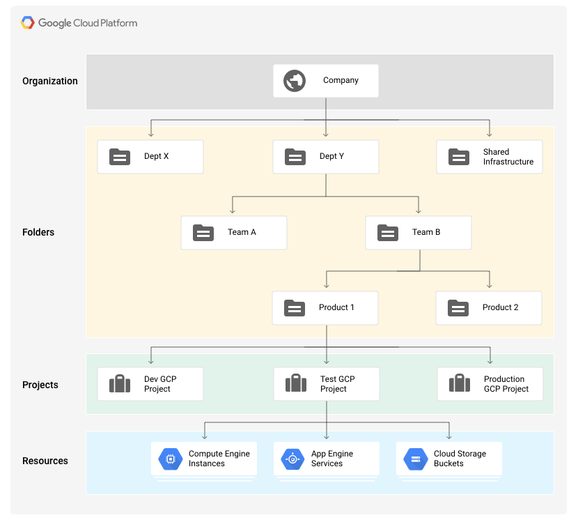
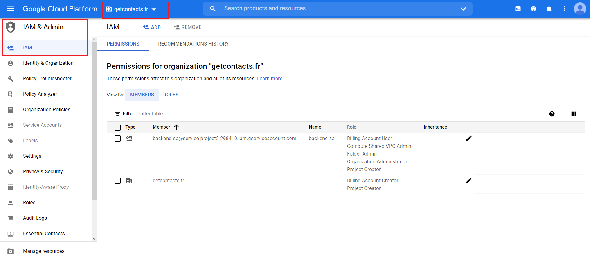
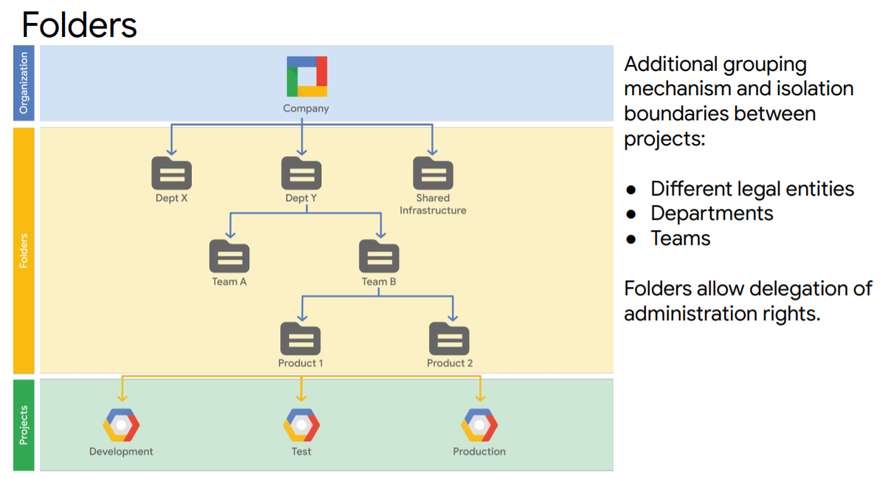
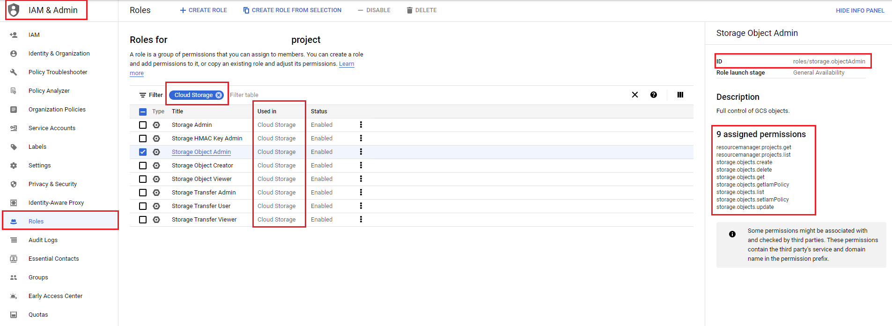
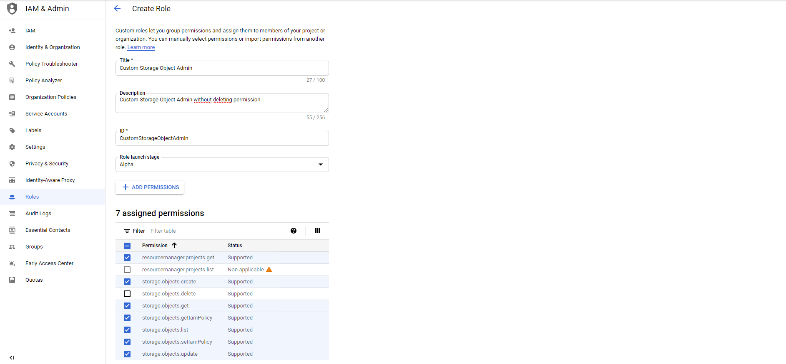
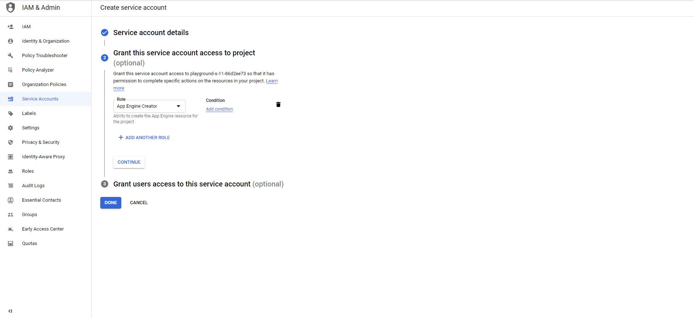
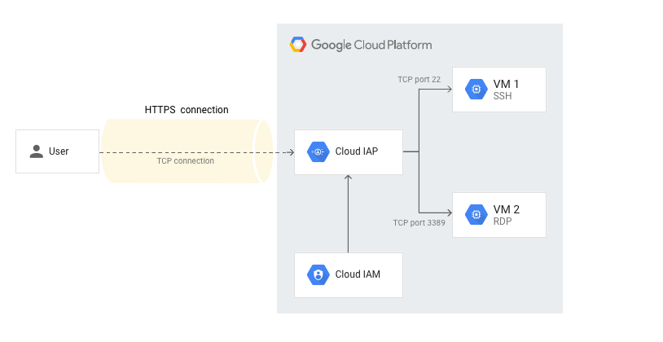
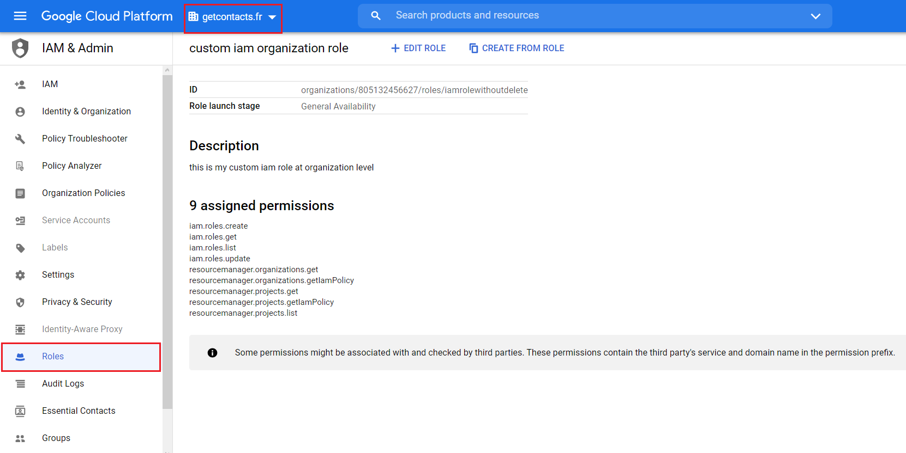
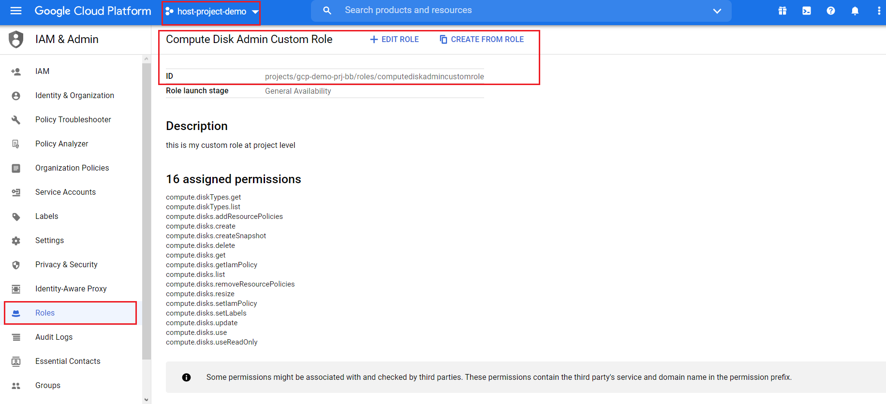

In this article, we discuss an important part of GCP: IAM or Identity and Access Management.
Before going into details, let’s take a quick look at IAM Hierarchy.

As you can see, IAM includes some basic objects at each level: organization, folders, projects and resources. GCP allows you to set IAM policies at any of these levels.
Understanding these IAM objects and how to set IAM at the corresponding level will help you to design your solution following Google’s recommended best practices.
Cloud IAM objects
- Organization: is a root node for Google Cloud resources in your company. This node is provisioned automatically when your Google Workspace (former G Suite) or Cloud Identity account is created. At this level, you may have the following roles:
- Organization Admin: controls administration overall cloud resources such as to define IAM policies, to determine the structure of the resource hierarchy or to delegate responsibility over critical components as Networking, Billing through IAM roles
- Project Creator: controls project creation, inherited by all the projects in the organization
- Folder Creator: controls folder creation

- Folders:
- Folders provide an additional grouping mechanism and isolation boundary between projects
- Folders can contain projects and other folders
- Access to resources can be limited by folder, so users in one department can only access and create GCP resources within that folder

-
Projects: a base entity in GCP. A project is required to use Google Cloud, and forms the basis for creating, enabling, and using all Google Cloud services, managing APIs, enabling billing, adding and removing collaborators, and managing permissions
-
Resources: GCP’s services such as Virtual Private Cloud (VPC), Google Compute Engine, Cloud SQL, Datastore, etc…
-
Roles: a role contains a set of permissions allowing a member to do one or more specific actions. You have three types of IAM roles in GCP:
- Basic: IAM basic roles apply across all Google Cloud services in a project
- Owner: has full administrative access including delegating IAM permissions to other members
- Editor: has modify and delete access but cannot delegate IAM permissions to other members
- Viewer: has read-only access.
- These basic roles are concentric. That means the Owner role includes the permissions of the Editor role, and the Editor role includes the permissions of the Viewer role.
- Predefined: IAM predefined roles apply to a particular GCP service in a project
-
For Google Compute Engine service, you have some predefined roles like Compute Instance Admin, Compute Network Admin, Compute Storage Admin. For more information, click here.
-
For Google Cloud Storage service, you have some predefined roles like Storage Object Creator, Storage Object Viewer, Storage Admin, etc… For more information, click here
-
The sample principle will be applied to other GCP services. You can find the corresponding predefined roles on Google documentation.
-
Google recommend using Predefined roles instead of Basic roles
-
For example: let’s take a look at Cloud Object Admin predefined role. This role contains:
- an identifier: roles/storage.objectAdmin. This ID is required when you work with roles in gcloud or terraform
- list of permissions: 9 assigned permissions
- name of service that this role will be applied to. In this case, this role is applied to the Cloud Storage service.
-

- Custom: IAM custom roles let you define a precise of permissions. This custom role can be created at the organization level or at the project level.
- Google recommends the least priviledge. In some cases, you want to create your own roles with your own permissions or you want to clone an existing predefined role and then remove some privileged permissions (like *.delete). In these cases, IAM custom role is a good fit for you.
- For example, we will create a custom role based on Cloud Object Admin predefined role and then we remove the delete permissions.
- Select the Cloud Object Admin role and then click on the button Create role from selection on top of the IAM page
- Modify the permissions list by removing the storage.objects.delete permission
- Click on the Create button to create this custom role

- Basic: IAM basic roles apply across all Google Cloud services in a project
-
Members: there are 5 different types of members in GCP
- a Google account: a Gmail account like example@gmail.com
- a Google Group: example@googlegroups.com
- a Google Workspace or Cloud Identity account: example@your_domain.com
- a Service Account: provide an identity for carring out server-to-server interactions. There are 3 types of service account:
- Built-in: Compute Engine and App Engine default service accounts (123456-compute@developer.gserviceaccount.com)
- Google APIs service account: runs internal Google processes on your behalf (123456-compute@project.gserviceaccount.com)
- User-defined (custom) service account: service account that you created
- Google recommends granting the IAM permissions to Google Groups or to service accounts instead of granting to individual accounts
- For example, we create a new service account:
- From IAM & Admin page, click on Service Account on the sidebar
- Give it a name and grant it some IAM roles
- After creating, you could generate a key file (contains private key) that allows you to connect to GCP on the service account behalf

Important:
- The IAM inheritance is from the top to the bottom (Organization –> Folder –> Project –> Resources)
- An IAM role/permission is granted on children’s scope cannot override this one granted on the parent’s scope. It means that if I give you a Editor role at the Folder level and I also give you a Viewer role at the project level. Then, you still have an Editor role at the project level.
- Use principles of least priviledge when granting roles
- Grant roles to Google groups or service account instead of individuals
- Be careful when granting the Service Account Users role, because it provides access to all the resources that the service account has access to
- Use Cloud Identity-Aware Proxy (Cloud IAP) when possible. It lets you establish a central authorization layer by HTTPS. So users can access your gcp instances using SSH or RDP directly from the GCP console. For more information, click here.

Terraform
- Create a custom role using terraform:
In GCP console, you can see these new custom roles at the organization level and at the project level accordingly.


- Grant this role to an existing member: a user, a service account and a google group
You could also grant your custom roles at the resource level: vpc network, vpc subnetwork, bucket storage, etc…
gcloud
You can also create the custom role using gcloud command line:
- Get role’s description:
gcloud iam roles describe [role_id]
- Create a custom role using YAML file:
title: My Custom Role
description: This is my custom role
stage: GA
includedPermissions:
- iam.roles.get
- iam.roles.list
- Then, execute the following command to create a custom role at the organization level:
gcloud iam roles create [role_id] --organization=[organization_id] --file=[yaml-file-path]
- Or, execute the below command to create a custom role at the project level:
gcloud iam roles create [role_id] --project=[project_id] --file=[yaml-file-path]
-
Grant this role to an existing member:
- At the organization level:
gcloud organizations add-iam-policy-binding [organization_id] \ --member='[member_type]:EMAIL_ADDRESS' \ --role="roles/[role_id]"- At the folder level:
gcloud resource-manager folders add-iam-policy-binding [folder_id] \ --member='[member_type]:EMAIL_ADDRESS' \ --role="roles/[role_id]"- At the project level:
gcloud projects add-iam-policy-binding [project_id] \ --member "[member_type]:EMAIL_ADDRESS" \ --role "roles/[role_id]"where [member_type] can be one of these values:
- user
- serviceAccount
- group
References
- IAM hierarchy: https://cloud.google.com/resource-manager/docs/cloud-platform-resource-hierarchy#projects
- Best practices: https://cloud.google.com/docs/enterprise/best-practices-for-enterprise-organizations
- Cloud IAP: https://cloud.google.com/iap/docs/concepts-overview
- Custom roles: https://cloud.google.com/iam/docs/creating-custom-roles
See also
- Azure-Connect on-premises networks to Azure using VPN gateways (part 3)
- Azure-Connect on-premises networks to Azure using VPN gateways (part 2)
- Azure-Connect on-premises networks to Azure using VPN gateways (part 1)
- GCP-Sharing networks across projects
- Azure-Nat Gateway with Virtual Network Appliance